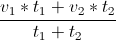
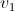
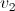
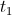
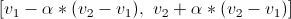

Pojašnjenje opcija
- Funkcija
-
funkcija čiji se ekstrem traži. Neke česte funkcije su
- x^y - x sa eksponentom y gdje je y neki broj
- sin(x) - sinus od x
- cos(x) - kosinus od x
- exp(x) - baza e sa eksponentom x
- Sjeme
- Cijeli broj koji se koristi kao sjeme za generator nasumičnih brojeva
- Od - Do
- Granice domene funkcije. Određuje raspon koji se pretražuje i iscrtava
- Broj točaka
- Broj koji kaže koliko će se točaka izračunati radi crtanja funkcije. Veći broj točaka, funkcija je bolje iscrtana
- Traži
- Određuje tražimo li minimum ili maksimum funkcije
- Veličina populacije
- Broj jedinki unutar jedne populacije
- Reprezentacija
-
Određuje način reprezentacije jedinke.
- Genotip - jedinka je prikazana pomoću niza 0 i 1
- Fenotip - jedinka je prikazana svojom stvarnom vrijednošću
- Broj bitova
- U slučaju da je odabran genotipski prikaz, određuje koliko se bitova koristi za prikaz jedne jedinke
- Vrsta mutacije fenotip
- Određuje koja se mutacija koristi za fenotipski prikaz . Mutacija se dogodi samo ako je vjerojatnost mutacije unutar intervala [0, vjerojatnost mutacije ]
- Delta
- Vrijednost koja se korisit za popravljanje rezultata kod linearne mutacije i Gauss mutacije
- Vrsta rekombinacije fenotip
-
Rekombinacija koja se koristi kod
fenotipskog prikaza
. Rekombinacija se obavlja
tako da se jedinka rekombinira sa drugom jedinkom gdje su obje odabrane koristeći
jednu od
selekcijskih metoda
- Ništa - ne koristi se rekombinacija
- Aritmetička sredina - nova jedinka je aritmetička sredina roditelja
-
Težinka sredina - nova jedinka je težinska sredina roditelja.
Računa se pomoću formule

gdje su
-  - vrijednost prvog roditelja
-  - vrijednost drugog roditelja
-  - težina prvog roditelja (funkcijska vrijednost pomaknuta za najgoru jedinku u populaciji)
- - težina drugog roditelja (funkcijska vrijednost pomaknuta za najgoru jedinku u populaciji)
-
Alfa interval - nova jedinka je uniformno odabrana
vrijednost iz intervala

gdje su
- - vrijednost prvog roditelja
- - vrijednost drugog roditelja
-
 - koeficijent postavljen na vrijednost 0.3
- koeficijent postavljen na vrijednost 0.3
- Vrsta mutacije genotip
-
Određuje koja se mutacije koristi za
genotipski prikaz
- Ništa - ne koristi se mutacija
- Okret bita - invertira bit ako nam je vjerojatnost mutacije unutar intervala [0, vjerojatnost mutacije ]
- Vjerojatnost mutacije
- Određuje koja je vjerojatnost mutacije jednog bita kod okret bita mutacije ili izvršavanja linearne mutacije i Gauss mutacije
- Vrsta rekombinacije genotip
-
Rekombinacija koja se koristi kod
genotipski prikaz
. Rekombinacija se obavlja
tako da se jedinka rekombinira sa drugom jedinkom gdje su obje odabrane koristeći
jednu od
selekcijskih metoda
- Ništa - ne koristi se rekombinacija
- Jedna točka - odabire se točka rezanja T. Prvo dijete je kombinacija bitova prvog roditelja u rasponu [0, T> i drugog roditelja [T, broj bitova >. Drugo dijete je kombinacija bitova drugog roditelja u rasponu [0, T> i prvog roditelja [T, broj bitova >. Odabire se ono dijete koje ima veći faktor dobrote
- Dvije točke - odabiru se dvije točke rezanja, T1 i T2. Prvo dijete je kombinacija bitova prvog roditelja u rasponu [0, T1>, drugog roditelja [T1, T2> i opet prvog roditelja [T2, broj bitova >. Drugo dijete je kombinacija bitova drugog roditelja u rasponu [0, T1>, prvog roditelja [T1, T2> i opet drugog roditelja [T2, broj bitova >. Odabire se ono dijete koje ima veći faktor dobrote
- Vrsta populacije
-
Određuje vrstu populacije
- Nepreklapajuća - stvara se broj djece od roditelja koji su selektirani jednom od selekcijskih metoda . U sljedeću generaciju ulaze samo najbolja djeca (bez roditelja)
- Preklapajuća - stvara se broj djece od roditelja koji su selektirani jednom od selekcijskih metoda . U sljedeću generaciju ulaze samo najbolje jedinke (djeca + roditelji)
- Broj djece
- Određuje koliko djece nastaje prilikom evolucije. Za nepreklapajuću populaciju taj broj mora biti veći ili jednak veličini populacije
- Selekcija
-
Određuje na koji način se selektiraju roditelji
- Uniformna - vjerojatnost odabira svakog roditelja jest 1 / Veličina populacije
- Proporcionalna - vjerojatnost odabira svakog roditelja jest faktorDobrote / ukupniFaktorDobroteCijelePopulacije
- Dvo-turnirska - jedan roditelj se bira na način da se prvo uniformno odaberu dvije jedinke kandidati. Roditelj postaje ona koja ima veći faktor dobrote
- Skraćivanje - Od cijele populacije se bira X najboljih jedinki . Iz te manje populacije najboljih jedinki se uniformno biraju roditelji
- Broj jedinki za skraćivanje
- Određuje koliko se najboljih jedinki koristi prilikom procesa stvaranja nove generacije
- Broj generacija
- Određuje nakon koliko generacija se prestaje sa evoluiranjem populacije